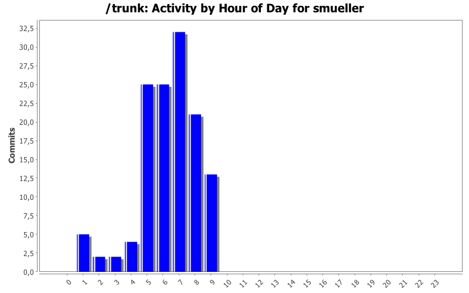
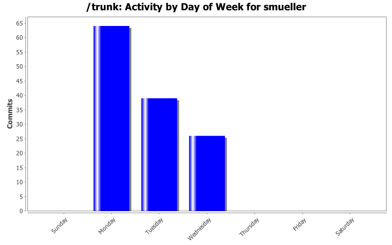
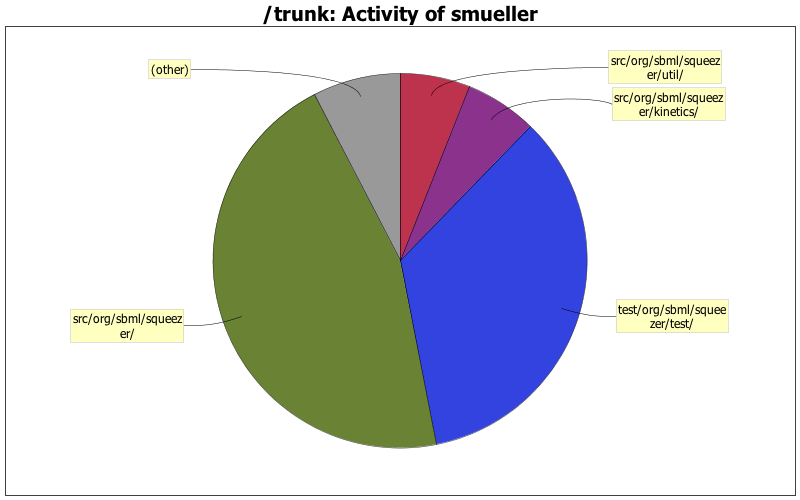

| Directory | Changes | Lines of Code | Lines per Change |
|---|---|---|---|
| Totals | 129 (100.0%) | 3285 (100.0%) | 25.4 |
| src/org/sbml/squeezer/ | 33 (25.6%) | 1496 (45.5%) | 45.3 |
| test/org/sbml/squeezer/test/ | 17 (13.2%) | 1138 (34.6%) | 66.9 |
| src/org/sbml/squeezer/kinetics/ | 28 (21.7%) | 204 (6.2%) | 7.2 |
| src/org/sbml/squeezer/util/ | 13 (10.1%) | 198 (6.0%) | 15.2 |
| src/org/sbml/squeezer/gui/ | 21 (16.3%) | 163 (5.0%) | 7.7 |
| src/org/sbml/squeezer/math/ | 1 (0.8%) | 48 (1.5%) | 48.0 |
| src/org/sbml/squeezer/io/ | 7 (5.4%) | 30 (0.9%) | 4.2 |
| src/de/zbit/gui/prefs/ | 5 (3.9%) | 8 (0.2%) | 1.6 |
| resources/org/sbml/squeezer/resources/cfg/ | 4 (3.1%) | 0 (0.0%) | 0.0 |

Units are now set to a unique metaID
25 lines of code changed in 2 files:
added a ProgressBar for the Console, added a test for the GUI independent law generation and storage.
62 lines of code changed in 2 files:
limited the log message length while the ProgresssBar is displayed.
19 lines of code changed in 2 files:
Added ProgressBar for the law generation, corrected ProgressBar for law storage
95 lines of code changed in 5 files:
Separated the kinetic law generation from the KineticLawGenerator constructor, so that it is now able to add listeners before generating the equations. Corrected the display of the progress when generating / storing kinetic equations.
88 lines of code changed in 11 files:
Substituted the ProgressDialog with an AbstractProgressbar. The ProgressBar for the console has yet to be integrated.
263 lines of code changed in 9 files:
Replaced the LawListener with the ModelChangeListener; changes during the model synchronizations are now displayed on the StatusBar.
76 lines of code changed in 8 files:
412 lines of code changed in 2 files:
Started to make the necessary adaptations for the Listener changeover.
the SBMLio still needs to be changed.
104 lines of code changed in 7 files:
Corrected Test Cases regarding the comparison of the model before and after saving it to a file.
6 lines of code changed in 2 files:
corrected the parameters in the function calls of both org.sbml.squeezer.KineticLawGenerator.checkUnits() functions.
14 lines of code changed in 1 file:
fixed some bugs concerning the availability of some properties in the different levels; refined test cases
301 lines of code changed in 3 files:
included default values in the option descriptions.
66 lines of code changed in 1 file:
improved option documentation
117 lines of code changed in 4 files:
improved logging, corrected model comparison: now the test passes, if the miniModels are equal
72 lines of code changed in 1 file:
corrected comparison of models before and after model export. There still are problems with some unsetted variables.
4 lines of code changed in 1 file:
extended test cases in regard to writing models to SBML files.
75 lines of code changed in 2 files:
Added test for preference settings.
56 lines of code changed in 1 file:
Fixed the reaction-wise squeezing.
All test files of the SBML Test Suite can now be converted into models and squeezed (model-wise and reaction-wise)
139 lines of code changed in 2 files:
Amended bug for level 1, as SBML components here do not have a constant attribute.
3 lines of code changed in 1 file:
(9 more)